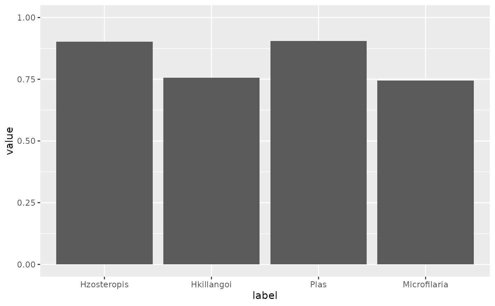
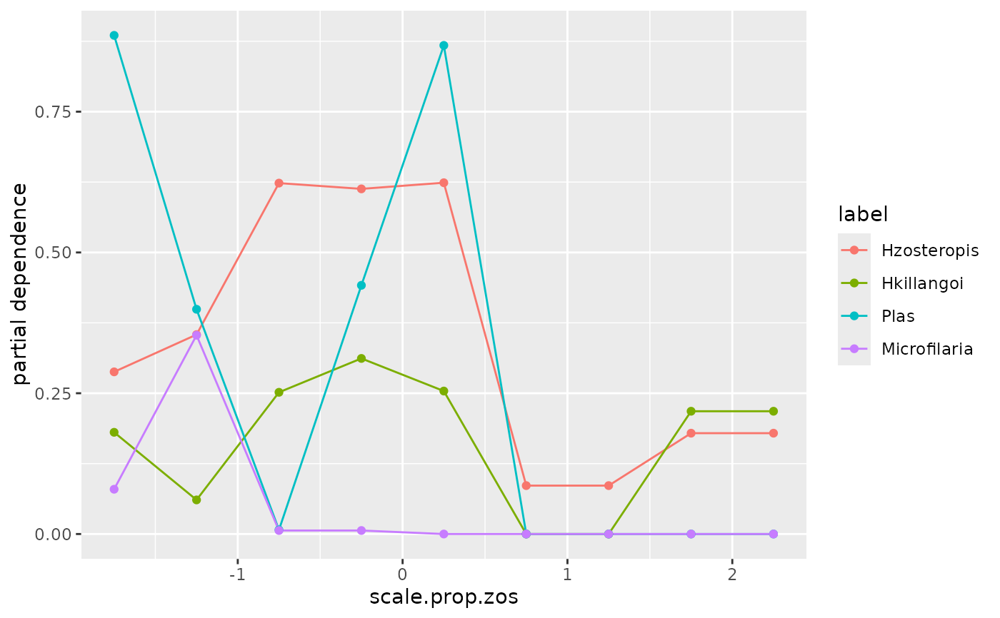
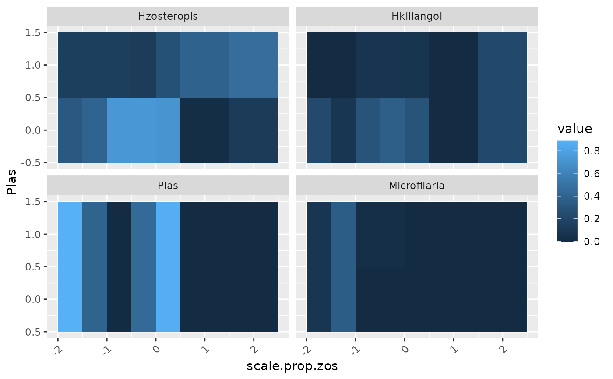

A wrapper function around flashlight::flashlight() to run multi-response
model-agnostic interpretable machine learning analyses. The output can be
interrogated using the core functionality of flashlight: see
vignette("flashlight", package = "flashlight").
Arguments
- mrIMLobj
A list object output by
mrIMLpredicts().- response
A character string indicating the type of response:
"single"selects one response (indicated byindex) and"multi"selects all responses.- index
A numeric value used when
responseis"single"to select which response column in the data to create a flashlight object for.- predict_function
A function specifying a user-defined prediction function (optional).
Examples
library(flashlight)
library(ggplot2)
data <- MRFcov::Bird.parasites
Y <- data %>%
dplyr::select(-scale.prop.zos) %>%
dplyr::select(order(everything()))
X <- data %>%
dplyr::select(scale.prop.zos)
mrIML_rf <- mrIML::mrIML_bird_parasites_RF
fl <- mrFlashlight(
mrIML_rf,
response = "multi",
index = 1
)
# Performance comparison
fl %>%
light_performance(
metrics = list(`ROC AUC` = MetricsWeighted::AUC)
) %>%
plot() +
ylim(0, 1)

# Partial dependence curves
fl %>%
light_profile(data = cbind(X, Y), "scale.prop.zos") %>%
plot()

# Two-way partial dependence
fl %>%
light_profile2d(c("scale.prop.zos", "Plas")) %>%
plot()
